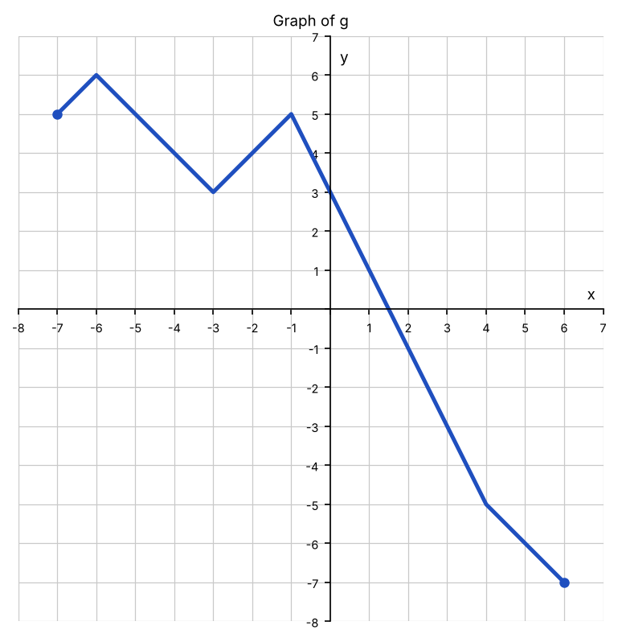
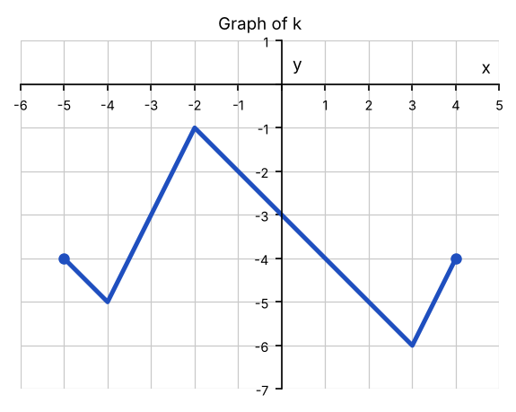
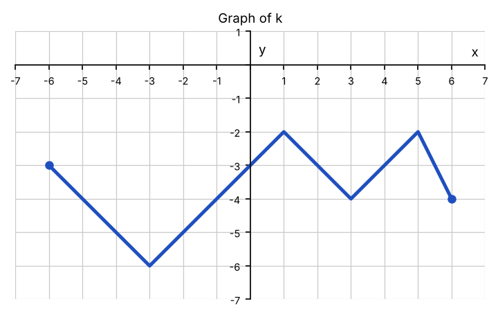

Problem Set: 1.2 Function Notation (FN2)
Answers are hidden. Try each problem first, then click Answer to check. For more practice with new numbers every time, use CheckIt FN2.
Practice (CheckIt-style)
Same kinds of questions, wording, and answer forms as CheckIt.
1. Let \(k(x) = \begin{cases} \sqrt{x^{2} + 1} & -5 < x < 2 \\ \frac{4 x - 2}{x^{2} + 4} & 2 \le x < 5 \end{cases}\). [FN2-F-01 · FN2.a · piecewise_eval · seed 11 · draft]
- Find \(k(3)\).
- Find \(k(-3)\).
- Find \(k(2)\).
- Answer
- (a) \(k(3) = \frac{10}{13}\)
(b) \(k(-3) = \sqrt{10}\)
(c) \(k(2) = \frac{3}{4}\)
2. Let \(g(x)\) be the function graphed below. [FN2-F-02 · FN2.b, FN2.c · graph_read_solve · seed 21 · draft]

- Find \(g(-5)\).
- For which \(x\)-value(s) in the interval \([-7, 6]\) does \(g(x) = 0\)?
- Answer
- (a) \(g(-5) = 5\)
(b) \(g(x) = 0\) when \(x = 1.5\)
3. Let \(h(x) = \begin{cases} 2 x^{2} + x & -5 < x \le 2 \\ \frac{x - 3}{2 x^{2} + 1} & 2 < x < 5 \end{cases}\). [FN2-F-03 · FN2.a · piecewise_eval · seed 30 · draft]
- Find \(h(2)\).
- Find \(h(3)\).
- Find \(h(-4)\).
- Answer
- (a) \(h(2) = 10\)
(b) \(h(3) = 0\)
(c) \(h(-4) = 28\)
4. Let \(k(x)\) be the function graphed below. [FN2-F-04 · FN2.b, FN2.c · graph_read_solve · seed 44 · draft]

- Find \(k(0)\).
- For which \(x\)-value(s) in the interval \([-5, 4]\) does \(k(x) = -4\)?
- Answer
- (a) \(k(0) = -3\)
(b) \(k(x) = -4\) when \(x = -5\), \(x = -3.5\), \(x = 1\), \(x = 4\)
Quiz & Exam Practice
The kinds of questions you will see on quizzes and exams.
5. Let \(h(x) = x^{2} - 7\). [FN2-A-01 · FN2.d, FN2.e · eval_expression_and_solve · seed 5 · draft]
- Find \(h(4)\).
- Find and simplify \(h(a+1)\).
- Find every input \(x\) for which \(h(x) = -3\).
- Answer
- (a) \(h(4) = 9\)
(b) \(h(a+1) = a^{2} + 2 a - 6\)
(c) \(x = -2\) or \(x = 2\)
6. Let \(g(x) = \begin{cases} \sqrt{x + 6} & -6 \le x < 0 \\ x^{2} - x - 1 & 0 \le x \le 4 \end{cases}\). [FN2-A-02 · FN2.a · piecewise_with_domain · seed 1 · draft]
- Find \(g(-2)\), or explain why it is undefined.
- Find \(g(0)\), or explain why it is undefined.
- Find \(g(6)\), or explain why it is undefined.
- Answer
- (a) \(g(-2) = 2\)
(b) \(g(0) = -1\) (the break point \(0\) belongs to the second piece)
(c) \(g(6)\) is undefined: \(6\) is not in the domain \([-6, 4]\), so neither piece applies.
7. Let \(h(x) = \frac{4 x - 1}{x + 1}\). [FN2-A-03 · FN2.d, FN2.e · rational_eval_solve · seed 13 · draft]
- Find \(h(0)\).
- Explain why \(h(-1)\) is undefined.
- Solve \(h(x) = 3\).
- Answer
- (a) \(h(0) = -1\)
(b) Substituting \(-1\) makes the denominator \(x + 1\) equal to \(0\), and division by zero is undefined.
(c) \(x = 4\)
8. Let \(k(x)\) be the function graphed below. [FN2-A-04 · FN2.b, FN2.c · graph_read_solve · seed 63 · draft]

- Find \(k(-2)\).
- For which \(x\)-value(s) in the interval \([-6, 6]\) does \(k(x) = -4\)?
- Answer
- (a) \(k(-2) = -5\)
(b) \(k(x) = -4\) when \(x = -5\), \(x = -1\), \(x = 3\), \(x = 6\)
Looking Ahead to Calculus
An idea from this section that grows into calculus.
PROPOSED: needs your approval. Calculus idea: Difference quotient → slope of the tangent line (the derivative)
9. Let \(g(x) = x^{2} + 2 x\). [FN2-B-01 · FN2.d · difference_quotient_bridge · seed 3 · proposed]
- Find and simplify \(\frac{g(3+h) - g(3)}{h}\) for \(h \ne 0\).
- Evaluate your answer for \(h = 0.1\), \(h = 0.01\), and \(h = 0.001\). What number do the values approach as \(h\) gets closer to \(0\)?
- This expression is the slope of a line through two points on the graph of \(g\). Which two points?
- Answer
- (a) \(h + 8\)
(b) \(h = 0.1\): \(8.1\), \(h = 0.01\): \(8.01\), \(h = 0.001\): \(8.001\). The values approach \(8\).
(c) \((3, g(3))\) and \((3+h, g(3+h))\). As \(h\) shrinks, the second point slides toward the first.
Spot the Slip
Find the error, fix it, and explain your thinking.
10. A student was asked: Let \(f(x) = x^{2} - 3\). Find every input \(x\) for which \(f(x) = 6\).
A student's work:
\(x^{2} - 3 = 6\)
\(x^2 = 9\)
\(x = 3\)
"So the only input is \(x = 3\)."
- Find the slip in the student's work and explain it in a sentence.
- Give the correct answer and check it.
- Answer
- (a) Going from \(x^2 = 9\) to \(x = 3\) misses a solution: both \(3\) and \(-3\) square to \(9\).
(b) \(x = -3\) or \(x = 3\). Check: \(f(-3) = (-3)^2 - 3 = 6\).